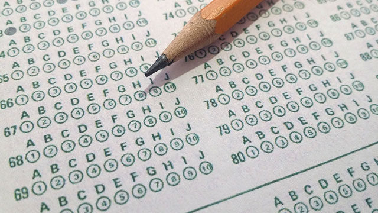

最近びみょうに、大学入試は変わっている気がします。その変化は指導要領の変化や出題傾向の変化のような、目に見える何かではありません。しいていうならば「雰囲気」が変わっているのです。
今から十数年前、わたしが受験生だった頃、大学入試は完全に「学生」のものでした。塾に行ったり参考書を買ったりするときは親に頼みますが、基本的にはそれも生徒が勝手に決めて頼むだけ。志望校の決定も生徒です。親には親なりの考えがあり、自分の考えとそぐわないことも当然ありますから、そのときはぶつかります。親の考えに反発し、「自分でやってやる」と反抗的になり、それが逆にモチベーションをあげる切っ掛けにもなったものです。
まだまだ子供ですから視野も狭く、大人からすれば危なっかしいことこの上ないけれども、大学に入ったらいよいよ大人の世界にデビューするのだから、ここは自分で動かなければいけない、と自負と意地を持っていたようにも思います。
そんな大学入試特有の雰囲気が最近なんとなく変わってきているのです。志望校も自分の考えはなく、親に相談し、決めてもらう。自分がやりたいことよりも、親の意向が最優先に来る。そんな状況が見られるようになってきました。実際にある調査では、志望校を決める際に親の意見に強く影響を受けると答えた生徒の数は20年前と比べて激増しているそうです。
この状況の背景に何があるのでしょう。社会学的な分析はいろいろできるでしょうが、いちばん大きな原因は「将来やりたいことがなにもない」というところにありそうです。そもそも自分の進むべき道の候補すら持たないのであれば、親の意見とぶつかることもありません。むしろ親の意見はとてもありがたい道しるべになります。塾で高校生をおしえる人間としては、正直なところ楽ではあります。理性的な選択、決断を進めやすくなるからです。しかし、一方で怖くもあります。自分が興味を持っていない道を言われるがままに進んでしまって大丈夫なのか、と。
「将来やりたいことがなにもない」学生の多くに共通する姿勢があります。それは、楽しめそうなことを”探していない”ということ。おもしろいもの、興味深いものはある日突然空から降ってくるわけではありません。精一杯周囲を見渡し、探しに探して見つかるものです。そして、探すためには「好奇心」が必要です。
好奇心はどこから生まれてくるのか
これは「問いの投げかけ方」を知っているかどうかなのです。目の前にあるものに適切な「なぜ」を投げかけ、その答えを探そうとするクセが出来ていれば、世界はとてもおもしろいものに見えてきます。そして、この「クセ」は生まれつきの能力ではなく、教育によって作り出されるものなのです。
小学校・中学校の教育は確かに大学レベルの学問の基礎の基礎になるという意味で重要です。しかし、より重要なのはこの「クセ」を身につける時期であるということでしょう。小中学生をお持ちの保護者の方は、是非生徒の興味の向け方を探ってみてください。定期テストの点数よりも重要な何かが眠っているかもしれません。
エンライテックの詳細を見る ＞＞